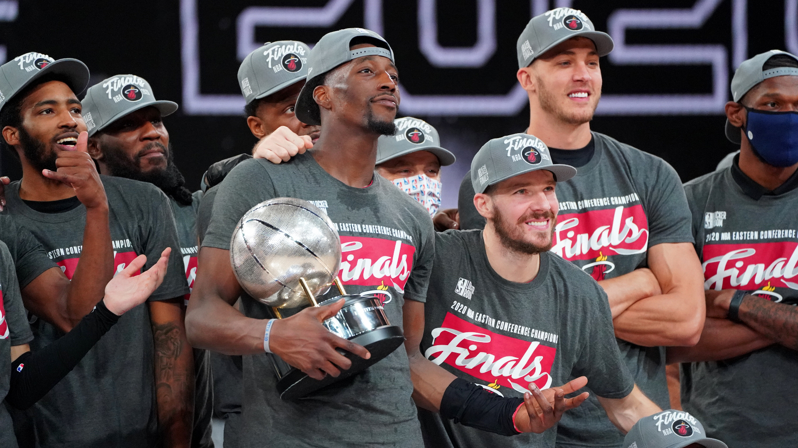
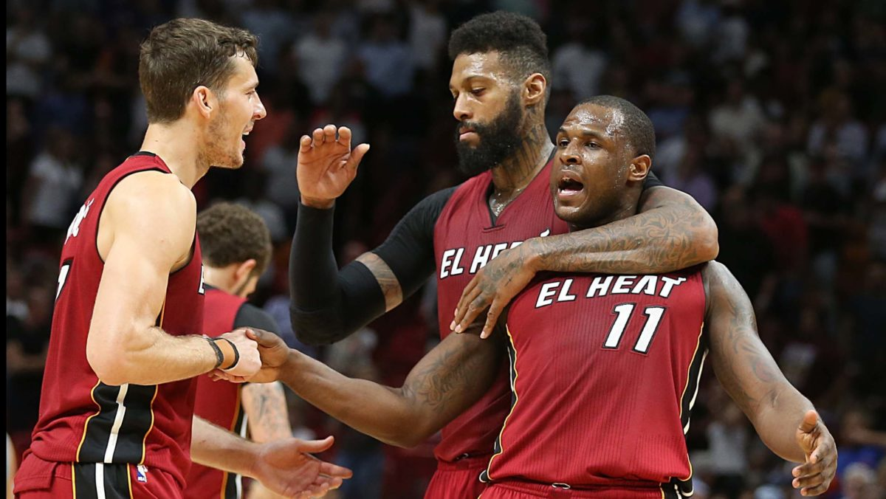

How the Miami Heat Quickly Became Title Contenders Again
The Beginning of the Downfall
I first started hearing versions of it from rival executives at the end of the 2014-15 season, when the Miami Heat traded two first-round picks for Goran Dragic on an expiring contract -- and finished 37-45, one game short of the playoffs:
If it wasn't the Heat, we'd all be laughing at them.
But of course: It was the Heat, with all that meant.
Miami entered the next season with one of the league's most intriguing starting lineups: Dragic, franchise icon Dwyane Wade, Luol Deng, Chris Bosh, and Hassan Whiteside -- a failed prospect who had knocked around from the D League to Lebanon before the Heat (as the Heat do) brought him in and helped turn him into a shot-blocking menace. LeBron James had bolted for Cleveland two years earlier, but Pat Riley was determined to chase him.
That team was 29-24 before blood clots ended Bosh's season and eventually robbed him of the last phase of his career. They made the playoffs anyway, losing a seven-game slog to the Toronto Raptors in the second round.
The Heat got a meeting with Kevin Durant that summer. When Durant chose the Golden State Warriors, Miami re-signed its own free agents: four years and $98 million for Whiteside, and then the decision to match the Brooklyn Nets' poison pill four-year, $50 million offer sheet for Tyler Johnson -- an undrafted diamond in the rough who had started seven games over two seasons. (A one-time-only super-spike in the cap in the summer of 2016 created an outlier players' market.)
The Heat easily could have traded Whiteside for decent return ahead of his free agency, league sources said, but understandably invested in the player they had helped resuscitate.
The pattern repeated in the summer of 2017: Gordon Hayward chose the Boston Celtics over Miami, and the Heat circled back to their incumbent free agents: a four-year, $60 million deal for James Johnson; four years and $52 million for Dion Waiters; and then four years and $50 million more to swipe Kelly Olynyk from the Celtics.
The Heat had scooped up Waiters and Johnson for very little, helped them get into peak shape, and maximized what they could do on the floor. They became core pieces of a lovable Heat team that went on an improbable run: 30-11 to finish the 2016-17 season after starting it 11-30. They missed the playoffs via tiebreaker.
Just before the start of that 30-11 run, Miami's brain trust scheduled a meeting to discuss how they should approach the trade deadline -- and the reality that math was chipping away at their postseason chances, Andy Elisburg, the team's GM and senior vice president, has told ESPN. The Heat started winning. The meeting never happened. (The Heat have never really started a season with the intent of tanking it. In-season circumstances -- injuries, Alonzo Mourning's kidney illness -- dictated their dips in 2002-03 and 2007-08.)
By the midway point of the 2017-18 season, it looked as if tanking the prior season might have been the "smarter" move. Rival chuckling at the Heat's expense morphed into genuine concern and curiosity: How was one of the league's glamour franchises going to get out of this? When I traveled to Miami to cover the team that winter, I could sense a certain discomfort within the franchise. It wasn't demoralization: more like the realization that most of those contracts were turning out worse than expected, and that climbing out would not be easy.
"I'm not sure there is any clear precedent for what Miami has done in just two years: rebuilding into a contender on the fly from a position of on-paper weakness. It is one of the greatest front-office accomplishments in recent league history -- more difficult, in a way, than the free-agency coup of 2010."
Whiteside's warts were showing. Waiters was dealing with an ankle injury; his whole situation was about to go haywire. On the Lowe Post podcast last week, Dan Le Batard, who might know Riley better than anyone in media, recalled strolling through Heat headquarters around that time with Riley and coming across walls adorned with photos of Waiters and Whiteside. "He, like, snorts in disdain," Le Batard said, "and he just blurted, 'Our so-called leaders.' And I'm like, 'Oof. This is not a good place for these people to be.'"
Justise Winslow, their potential savior, was also injured. His role going forward was murky. The Heat were stuck in mid-40s-wins territory, with a clogged cap sheet and half-empty quiver of draft picks.
It's possible to build from the middle toward the top without bottoming out. The Pacers transitioned from the Malice in the Palace teams into the Paul George-Roy Hibbert group that made back-to-back conference finals in 2013 and 2014 -- pushing Miami the distance in the first -- without ever winning fewer than 32 games or picking higher than No. 10. Houston hovered around .500 after the dissolution of the Tracy McGrady-Yao Ming teams before cobbling enough draft picks to snag James Harden. The Raptors ran aground at a higher win-total level before the Kawhi Leonard masterstroke.
It's doable, but it's hard. The teams that manage usually keep their cap sheets clean-ish and hoard at least their own first-round picks.
I'm not sure there is any clear precedent for what Miami has done in just two years: rebuilding into a contender on the fly from a position of on-paper weakness. It is one of the greatest front-office accomplishments in recent league history -- more difficult, in a way, than the free-agency coup of 2010.
It starts with the tedious, grinding work of NBA front-office life. Heat brass never became demoralized because they enjoy that work, and have faith they can do it as well or better than anyone. They drafted a star with the 14th pick in Bam Adebayo. He has developed even faster than anyone within the Heat expected.
"You could not project what kind of offensive player he would be," Riley told ESPN in January.
"The doubt was whether he could really do much on offense," said Chet Kammerer, Miami's senior adviser of basketball operations. "I just felt like, with his love for the game and his work ethic, he's going to be OK in that area. But that was the big question mark."
They found another key contributor, and maybe a future All-Star, with Tyler Herro at No. 13. Getting that kind of almost immediate production from two back-end lottery picks -- separated by only one draft -- is beyond any reasonable optimistic expectation. It's easy to be snarky and say the teams above Miami in the draft made the Heat's decisions for them, but you still have make the right picks. The draft is hard. Miami had Adebayo 10th on its draft board.
For most of this regular season, the Heat started two undrafted free agents in Kendrick Nunn and Duncan Robinson. Another, Derrick Jones Jr., comes off the bench. (They had the inside track in the hours after the 2016 draft on yet another undrafted free agent-turned-starter, but the Dallas Mavericks outbid Miami at the last second for Dorian Finney-Smith, sources have told ESPN.)
All of that was important foundation-laying, but it wouldn't amount to a deep playoff run without a centerpiece star.
During their season of overlap with the Chicago Bulls, Jimmy Butler once heard Dwyane Wade remark in the locker room about perhaps not having fully appreciated the Heat's culture until he joined another NBA team for the first time, sources close to the matter said. That stuck with Butler.
As Butler moved from Chicago to the Minnesota Timberwolves to the Philadelphia 76ers, never satisfied anywhere, his agent, Bernie Lee, would often warn him: "There's no utopia in the NBA. Every team has issues."
"I'd always hear back: What about Miami?" Lee said. "I can only assume the person who had a locker near Jimmy for a year and who is in a picture with Jimmy that has been the home screen on Jimmy's phone had something to do with that."
(Representatives for Wade at CAA confirmed the two discussed team culture and Wade's decision to move on from Miami during their shared time with the Bulls.)
When it became clear Butler and the Sixers would not come to terms on a long-term contract, the Heat were Butler's first choice even though they did not have cap space for him. That would not deter Riley.
Different stars have different reasons for being attracted to Miami. Some are sucked in by Riley's legend and aura. Most people enjoy good weather. The lack of a state income tax in Florida matters. But so does everything the Heat has built: their constant pursuit of winning; three recent championships; their high conditioning standards and refusal to tolerate less from anyone of any stature; Erik Spoeltra's coaching résumé, nearing Hall of Fame quality if it isn't already there (it probably is).
"We never once spoke about Miami as a city," Lee said. "Obviously it's an amazing place with amazing people, but Jimmy wasn't going there for the beach. Since he's gotten there, I think we have gone out to eat less than 10 times and one of them was the Super Bowl. We didn't even talk about the tax advantages. The only questions he asked were of the background of the people involved and how they would build out the team."
As one rival GM put it: "The Heat have something better than trade assets."
They had a player Philadelphia wanted: Josh Richardson, the 40th pick in the 2015 draft, another coup for Riley, Elisburg, Kammerer, and Adam Simon, Miami's assistant general manager and vice president of basketball operations. Miami neared a cap-clearing deal with the Mavericks at the start of free agency, but it fell apart. Heat executives went around the clock canvassing the league to put together something else.
In a complex four-team megadeal, the Sixers signed-and-traded Butler to Miami for Richardson. To make the math work, the Heat dealt Whiteside to the Portland Trail Blazers for Meyers Leonard and Maurice Harkless -- and then flipped Harkless into the LA Clippers' cap space along with a future first-round pick. (Teams have ended up being able to play musical chairs with all the big contracts signed in 2016.)
What if Jusuf Nurkic had been healthy, and the Blazers didn't need a stopgap center? The Heat probably would have been able to offload Whiteside somewhere by attaching the same first-round pick they sent to the Clippers. But Portland did need a center, and the Heat instead turned Whiteside into a useful player -- Leonard -- who started almost the entire regular season.
What if the Sixers had no interest in Richardson, or anything else Miami was willing to trade? That's a thornier one. It's possible the deal falls apart and Butler is elsewhere. But he wanted Miami and Miami wanted him, and the Heat could have searched out players and picks the Sixers liked better.
The Sixers wanted Richardson -- good fortune for Miami, but also good fortune Miami kicked into motion by nailing a long-shot pick and helping along Richardson's development.
Does #HeatCulture have the same appeal if you transferred all the basketball parts -- the history, Spoelstra, Riley -- to a cold Midwestern city with high taxes? No. But the Heat wouldn't lose all the appeal, either. They have built something real apart from South Beach and sun, even if South Beach and sun helped them build it. They exist in Miami anyway, so the counterfactual is irrelevant.
They worked to preserve that appeal for the summer of 2021 and beyond this season. They flipped Winslow for Andre Iguodala, Jae Crowder, and Solomon Hill at the trade deadline. They then came close to acquiring Danilo Gallinari, who would have presumably started at power forward alongside Adebayo in the Heat's current alignment. Talks fell apart in part because the Heat and Gallinari could not agree on a contract extension similar in scope to the one Iguodala agreed to upon his trade to Miami, according to reports from around the trade deadline.
Miami was wary of chipping away at its cap flexibility. It appeared feasible for the Heat to acquire Gallinari without surrendering Nunn, Robinson, Herro, or Jones -- to get him for draft compensation and salary filler, sources told ESPN's Bobby Marks and me at the time. It's hard to know whether precise terms between Miami and Oklahoma City were ever set in stone (or wet cement), since any trade likely hinged on an extension, but that was the takeaway at the time.
Given those parameters, there was a good argument to go all-in. Miami needed one more shooter. If they had to move Gallinari in a year or two to open cap room, they could find a way. But dumping salary in a pinch, on deadline, can cost a lot. You have no leverage. No one is eager to help you without extracting a bounty.
The Heat wagered Crowder and Iguodala were enough to thread the needle: make a real playoff push now while keeping things clear for the future. I was among those who thought they were still a little short on shooting. So far, they have been vindicated -- mostly because Crowder is doing a bang-on Gallinari impression: 43% from deep as a member of the Heat on seven attempts per game.
They are three wins from one of the most unlikely Finals berths in recent league history -- something even Heat higher-ups probably didn't expect before the season. Maybe the Heat are uniquely suited for this strange, unsettling bubble environment. That doesn't take away anything. Every team is dealing with this.
When James left Cleveland in 2010, Dan Gilbert, the Cavs' governor, penned an infamous letter in which he guaranteed the Cavs would win an NBA championship "before the self-titled former 'King' wins one." LeBron proved him wrong.
LeBron leaving before they expected it shattered the Heat, but they never stopped fighting to meet him at the summit again. That fight led them down some wayward paths, but they did remarkable work extricating themselves. They have a chance at everything again now.